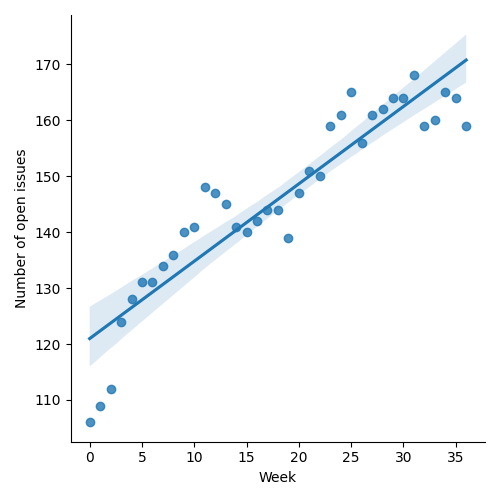
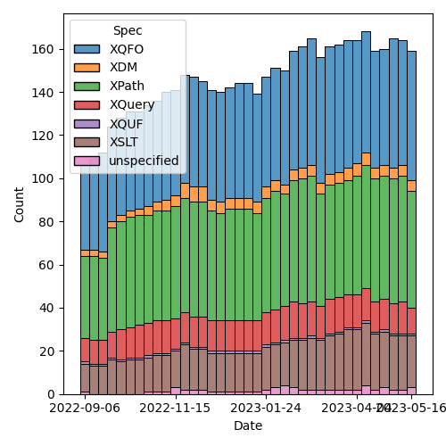

QT4 CG Meeting 035 Minutes 2023-05-23
Table of Contents
- Draft Minutes
- Summary of new and continuing actions
[0/9] - 1. Administrivia
- 2. Technical Agenda
- 3. Any other business?
- 4. Adjourned
Draft Minutes
Summary of new and continuing actions [0/9]
[ ]QT4CG-002-10: BTW to coordinate some ideas about improving diversity in the group[ ]QT4CG-016-08: RD to clarify how namespace comparisons are performed.[ ]QT4CG-026-01: MK to write a summary paper that outlines the decisions we need to make on “value sequences”- This is related to PR #368: Issue 129 - Context item generalized to context value and subsequent discussion.
[ ]QT4CG-029-01: RD+DN to draft spec prose for the “divide and conquer” approach outlined in issue #399[ ]QT4CG-029-07: NW to open the next discussion of #397 with a demo from DN See PR #449[ ]QT4CG-034-02: NW to check ExprSingle on PR #447 before merging this PR.[ ]QT4CG-034-03: NW to check why the diff for PR #447 is off the wrong base[ ]QT4CG-035-01: CG to make a few more (slightly more complex)map:keysexamples.[ ]QT4CG-035-02: CG to fix the type signature and examples inmap:filter.[ ]QT4CG-035-03: NW to attempt to draft a PR that allows xs:string to be promoted to xs:anyURI
1. Administrivia
1.1. Roll call [8/12]
Regrets BTW, EP, RD.
[ ]Anthony (Tony) Bufort (AB)[ ]Reece Dunn (RD)[X]Sasha Firsov (SF)[X]Christian Grün (CG)[X]Joel Kalvesmaki (JK)[X]Michael Kay (MK)[X]John Lumley (JL)[X]Dimitre Novatchev (DN)[ ]Ed Porter (EP)[X]C. M. Sperberg-McQueen (MSM)[ ]Bethan Tovey-Walsh (BTW)[X]Norm Tovey-Walsh (NW). Scribe. Chair.
1.2. Accept the agenda
Proposal: Accept the agenda.
Accepted.
1.2.1. Status so far…

Figure 1: “Burn down” chart on open issues

Figure 2: Open issues by specification
Figure 3: Open issues by type
1.3. Approve minutes of the previous meeting
Proposal: Accept the minutes of the previous meeting.
Accepted.
1.4. Next meeting
The next meeting is scheduled for Tuesday, 30 May 2023.
CG gives regrets for 30 May and 6 June.
1.5. Review of open action items [1/8]
[ ]QT4CG-002-10: BTW to coordinate some ideas about improving diversity in the group[ ]QT4CG-016-08: RD to clarify how namespace comparisons are performed.[ ]QT4CG-026-01: MK to write a summary paper that outlines the decisions we need to make on “value sequences”- This is related to PR #368: Issue 129 - Context item generalized to context value and subsequent discussion.
[ ]QT4CG-029-01: RD+DN to draft spec prose for the “divide and conquer” approach outlined in issue #399[ ]QT4CG-029-07: NW to open the next discussion of #397 with a demo from DN See PR #449[X]QT4CG-034-01: CG to add exception for date-time types todeep-equal[ ]QT4CG-034-02: NW to check ExprSingle on PR #447 before merging this PR.[ ]QT4CG-034-03: NW to check why the diff for PR #447 is off the wrong base
1.6. Review of open pull requests
No editorial PRs open at this time.
2. Technical Agenda
2.1. Issue #504: Merge map:keys and map:keys-where
- See #504
- CG: Propose to merge the two functions.
- MK: I just raised the question on the PR, this is fine.
Assuming we agree to merge them, then:
2.1.1. PR #515: 504: Merge map:keys and map:keys-where
- See #515
CG reviews the PR
- CG: The
map:keysfunction has a new predicate that defaults totrue(). You can filter the keys to be returned. - MSM: Could the string function accept the keys two or three?
- CG: Yes, the input is a sequence.
- MSM: I think the example is very clear, but I sometimes find
examples hard to understand if I can’t figure out why you’d want to
do it that way. Adding
threeas a possible value. - DN: This is similar to filtering keys.
- CG: Yes, I previously called this
map:keys-where, but the proposal was to merge them. - JK: In that spirit, I recommend maybe providing two or three more exmaples that use different data types, using dateTime or a number. And allude to what would happen if the map keys were of a mixed type.
- JL: Isn’t this exactly analagous to
map:filterfollowed bymap:keys? - CG: Yes.
- SF: Is there also
map:values? Yes, but they should have the same parameters.
Some discussion of such a proposal. Consensus that it’s not related.
- DN: Just so we don’t forget, this makes us want another function,
map:projectionormap:submapthat returns a new map with only these entries. - MK: Isn’t that
map:filter?
Yes, that’s map:filter, but the signature is wrong.
Some discussion of how map:filter relates to array:filter and filter.
- JL: The examples in
map:filterare also wrong!
ACTION QT4CG-035-01: CG to make a few more (slightly more complex) map:keys examples.
ACTION QT4CG-035-02: CG to fix the type signature and examples in map:filter.
Proposal: Accept this proposal?
Accepted.
2.2. PR #470: 369 add fixed-prefixes attribute in XSLT
- See #470
Proposal: save for later; perhaps an XSLT-focused call?
2.3. PR #396: 333: Deep-equal, no failure when comparing functions
- See PR #396
- NW: There has also been discussion about this today.
- MK: Yes, this has become a bit tangled. The original issue was to allow users to add a function, but it’s tangled up with comparing functions and sets and other things.
Proposal: drop this PR in favor of a broader PR that tackles the issue more deeply.
Accepted.
2.4. Issue #480: Allow type promotion of xs:string to xs:anyURI
- See Issue #480.
NW attempts to introduce the issue. Joe outlines why he’d like to be able to promote from xs:string to xs:anyURI.
- MK: The big question is, can this ever fail? We say promotion can never fail.
- … The term “promotion” suggests some kind of ranking so it’d be a bit odd here to be able to “promote” both ways.
- … The rules for xs:anyURI are somewhat funny around the edges
- MSM: I believe that in 1.1, the rule is that any string must be
accepted as an anyURI, but validators are allowed (or encouraged) to
warn people if it’s not syntactically legitimate.
- … There is historically a lot of fuzziness.
- MK: We don’t require XSD 1.1.
- … Then there’s the issue of namespace names.
- NW: It’s problematic if they have spaces in them.
- MSM: We don’t require 1.1, but in 1.1 the Schema WG attempted to
make the edges clearer by saying you have to accept any string. It’s
a usability issue if the string is actually usable as a URI, but not
a validation issue. But 1.0 says it’s the set of strings that
produce legal URIs in the RFC.
- … I think the answer to MK’s question is in a processor supporting 1.0, type conversion is not guaranteed to succeed.
- MK: Then the question is, is that a problem?
- NW: I’m sympathetic.
- MK: So am I, I think mutal promotion between hexbinary and base64 binary would also be good.
Straw poll: 7 in favor; 1 unsure.
Porposal: Add a rule that allows xs:string to be promoted to xs:anyURI
ACTION QT4CG-035-03: NW to attempt to draft a PR that allows xs:string to be promoted to xs:anyURI
2.5. Issue #414: Lift character set restriction of xs:string
- See Issue #414.
- MK: My view is that XSLT and XQuery is no longer exclusively about
processing XML. We process other kinds of data: JSON, HTML, CSV,
etc.
- … The idea that because XML has a restriction we need to have the same restriction has become obsolete.
- … With JSON we did the workaround of having “json-doc” that can read a file that contains non-XML characters and escapes them on the fly. But that’s much too clunky for the other data types.
- … We’d need to fudge a bit; you’d have to say that when you do schema validation, xs:string still means what XSD says it means, but when you produce xs:strings in other ways, then it’s not subject to that restriction.
- NW: What do you do about an xs:string that gets inserted as the child of a node? Or an attribute value?
- MK: Good question. Many tree models won’t stop you doing it anyway. We could put a trip in at a point where you serialize.
- NW: You must put the trap at serialization if not before!
- DN: I agree with what MK says. One thing that comes immediately to
mind is to introduce a more general type, general-string. So
xs:string is a general-string but not vice versa.
- … Then it will preserve compatibility and would allow general strings.
- MK: Yes, I think I decided against that because so many places will
have to be changed to work with general-strings.
- … User-writen functions will be problematic. You need to check at the boundary, you need a promotion rule, etc.
- … The machinery to deal with two string types like this is huge.
- … And we already have an XSD 1.0 string or an XSD 1.1 string so it’s already fuzzy!
- MSM: CG’s observation that this can easily have the effect of
pushing users to use other languages is a powerful one for me. I’d
like to make this possible if we can.
- … What I worry about, but I’m leaning towards MK’s fuzziness, if we introduce a new type, u-string for Unicode string (any Unicode character, not any bit pattern).
- … What I worry about is the problem I had with the free Pascal compiler. I was trying to write Pascal code to do something that was very slow in my XQuery implementation and I ran into problems because although it was 2019 or thereabouts, the documentation assumed that what you really wanted was the Pascal character set as defined in the 1970s. Using Unicode was a special need and you were expected to be willing to jump through all kinds of hoops. That’s just backwards.
- … If we introduce a new type, it has to be used by default whereever possible and the existing string type becomes something of historical interest.
- … But the term “string” is the natural name for such a type!
- … Perhaps we should make it implementation defined what characters are in string. But I’m not sure about that.
- MK: It’s kind of already that way since we say XSD 1.0 or XSD 1.1.
- MSM: So we could add a third choice or leave it open.
- JK: I was going to pick on NULL because I think it’s a good
conversation point. The characters we’re talking about fall into
three characters: NULL which is not illegal, UFFFE and UFFFF which
are illegal, and the third category is everything else.
- … If not NULL, will we have functions to parse a binary file and grab data?
- NW: My experience with “more characters but not NULL” in the XML WG leads me to conclude we should allow NULL, even though on some level I’d rather not.
- MK: We use NULL as a separator in a Saxon function!
- MSM: In my experience, when I wanted to work with stray characters,
I wrote a program to change them into elements with attributes that
defined the code point. That wasn’t a string, but it let me deal
with that later.
- … What we’re talking about here is be able to do something like that but without having to write another program.
- NW: That’s right, I think.
- MSM: If there’s a moral here: for some purposes at least, for mine, it would be enough to have a function that can read an arbitrary data stream and produce something I can work with in XDM, even if that means using elements.
- CG: We could extend unparsed text and add a fallback function for example.
- NW: But that’s not the same as allowing arbitrary characters in strings.
- CG: For user who want to just use parse-csv or parse-json, that may not be as convenient.
- SF: What about a fallback function that lets you translate characters on input.
- MK: That’s possible.
- NW: Unfortunately � isn’t allowed as an escape.
- JK: We could say that string could be anything except U+0000, U+FFFE, or U+FFFF and have a fallback for parsing binary. Maybe you’d need some more helper functions for casting to strings.
- JL: We’ve got functions in EXPath binary for that purpose.
- JK: I recommend promoting those to the main specs.
- MK: That’s an interesting idea. Certainly the functions in the binary module we could include. The file module would be much more difficult because of side-effects.
Some discussion of what we’d need. Read-binary and conversion functions, basically.
- NW: What are the options:
- Callback to encode non-available characters
- Encoding functions to represent non-available characters (as elements for example)?
- Any character except FFFE and FFFF
- Any character except 0000, FFFE and FFFF
- MK: Is there any reasons for excluding NULL?
- NW: My question exactly!
- SF: In C++ and Java, you can have anything in a string.
- MK: The vast majority of languages don’t give you characters, they just give 16 bit values, and you can put anything in there including unpaired surrogates.
- SF: Do we want to avoid those problems?
- MK: I’d like to support the whole of Unicode in a clean way, code points that represent characters that you’re allowed to have in Unicode.
Some discussion of serialization. It’s our spec and it will have to be updated.
- MSM: In a couple of languages I’ve worked in, I’ve been unhappy because I need to do things with Unicode strings that the language doesn’t support. I have found that working with arrays or sequences of integers allows me to do what I need to do. It’s a little tedious because every string-based function has to be reimplemented over integers. I wonder if either that or, generalizing, some other way of conceiving of the kinds of input we’re worried about would be another approach.
Let’s try a straw poll.
- NW: What are the options:
- Callback to encode non-available characters (on unparsed-text)
- Poll: 7
- Encoding functions to represent non-available characters (as elements for example)?
- Poll: 1
- Any character except FFFE and FFFF
- Poll: 6
- Any character except 0000, FFFE and FFFF
- Poll: 1
- Representing them as sequences integers
- Poll: 2
- Callback to encode non-available characters (on unparsed-text)
- NW: We are out of time, I’ll leave you to ponder that for next time. Later in the week, I’ll be curious to know if the group would like this back on the agenda next week, or let it sit for a spell.
- JK: Can you summarize this and put it in the thread?
- NW: Yes.
3. Any other business?
None heard.